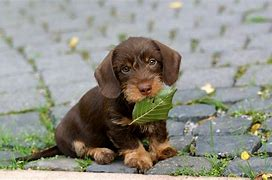
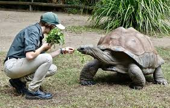

Przeglądaj Zwierzęta
Rex
Rasa: Owczarek niemiecki
Wiek: 3 lata
Rex jest energiczny, uwielbia spacery i zabawy.
Allie
Rasa: Jamnik
Wiek: 0,5 roku
Allie jest energetycznym szczeniakiem, uwielbia zabawy szczególnie z dziećmi.
Ivy
Rasa: Birmański
Wiek: 0,5 roku
Ivy jest młodą kotką, jest bardzo spokojna, trochę niesmiała, ale chętna do zabawy.
Franklin
Wiek: 3 lata
Franklin jest idelanym żłówiem domowym. Bardzo spokojny, nie sprawia problemów.
Stefan
Wiek: 120 lat
Stefan to staruch jakich mało, jest bardzo pozytywny i lubi spędzać czas z ludźmi
Yasuo i Yone
Wiek: 4 lata
Yasuo i Yone to przyjazne rodzeństwo, idealne dla rodzin z dziećmi
Ivern
Rasa: Mieszaniec
Wiek: 0,5 lat
Ivern jest spokojny, uwielbia odpoczywać i spać, bedzie idealnym zwierzęciem dla starszch ludzi
Garcia
Rasa: Mieszaniec
Wiek: 1,5 lat
Wspaniały i uczuciowy pies, idealny dla starych ludzi. Umie nawet zrobic zakupy.